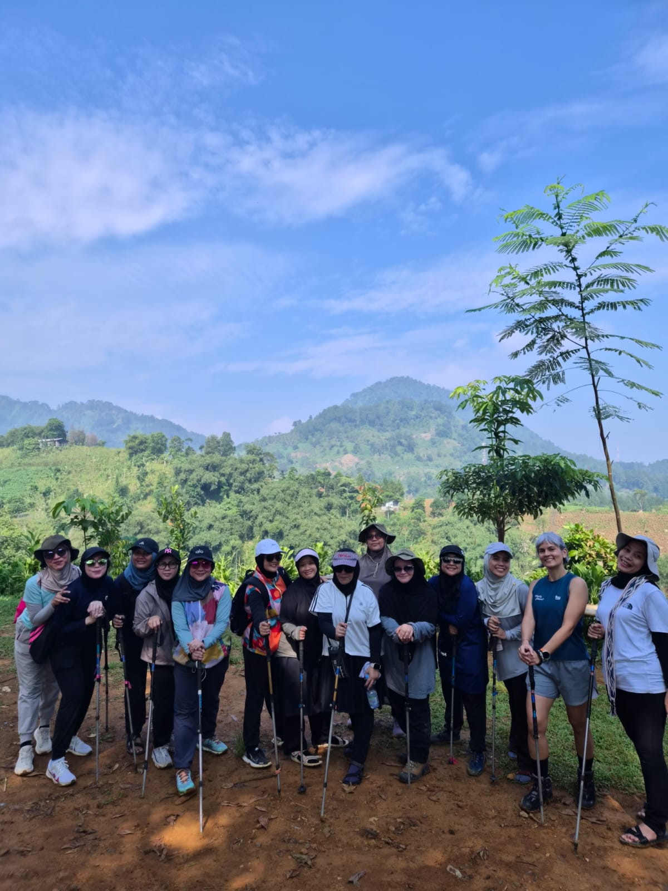
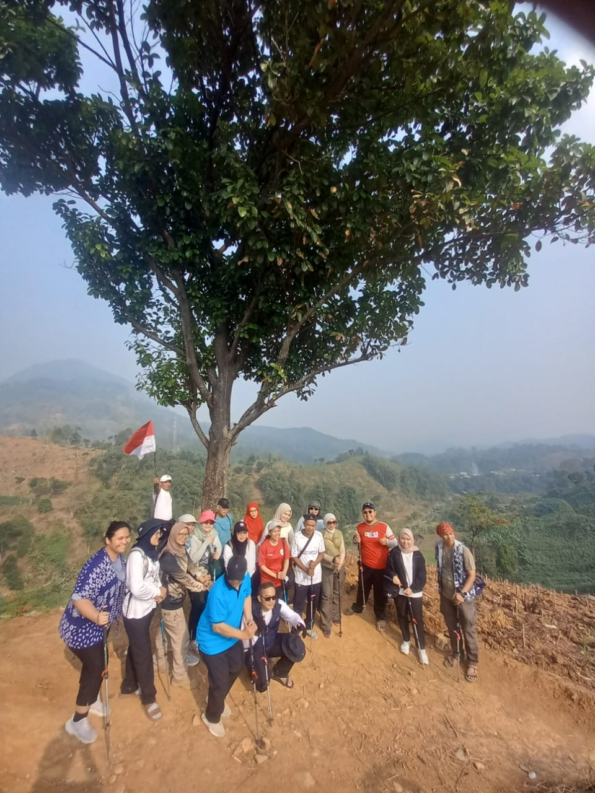
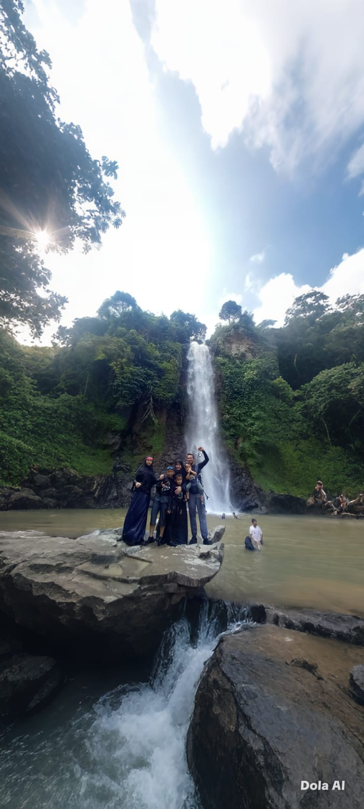
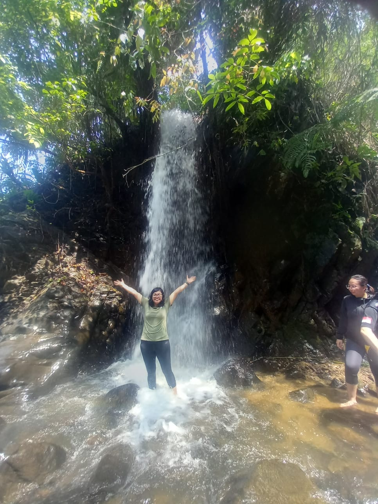
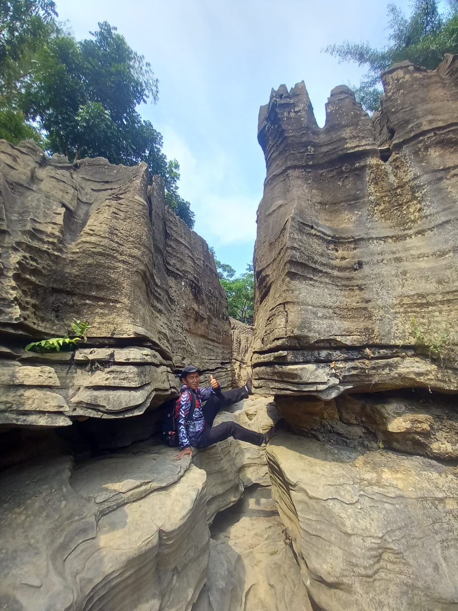
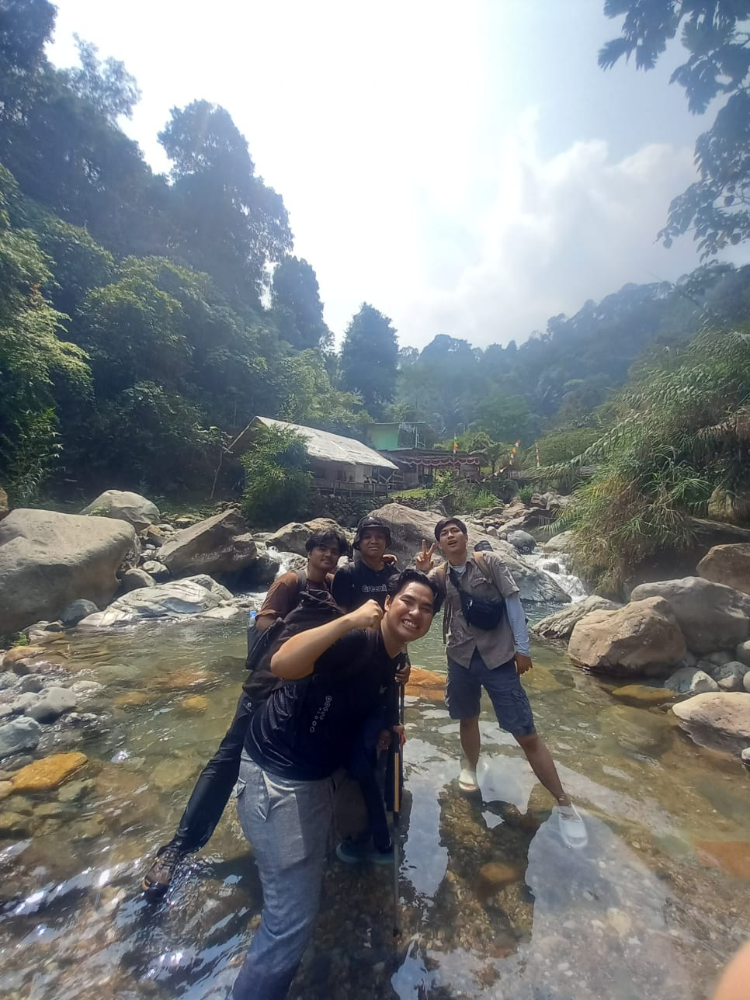
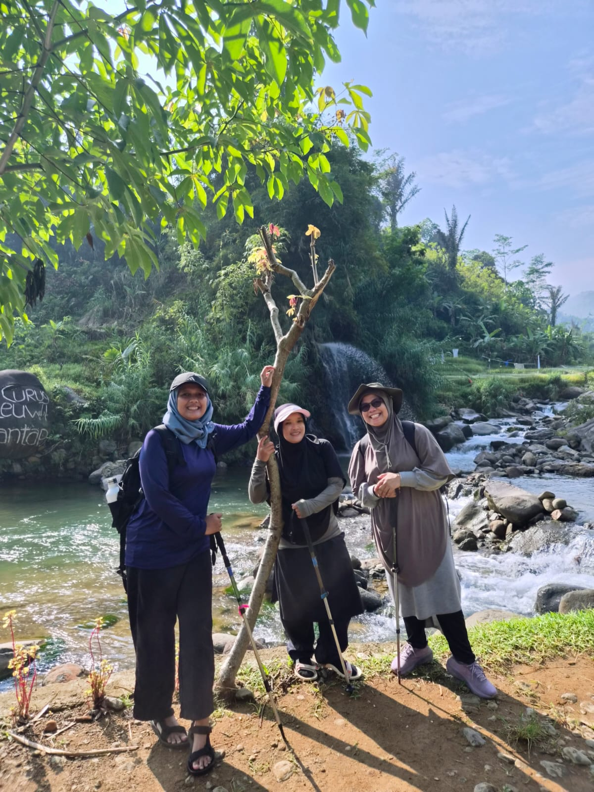
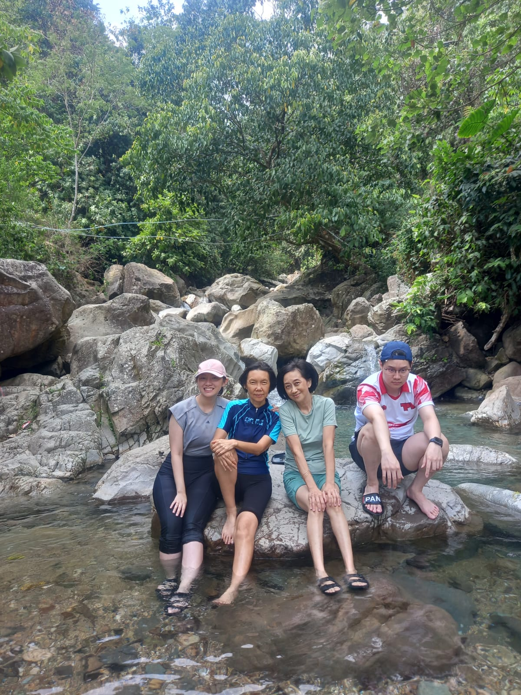
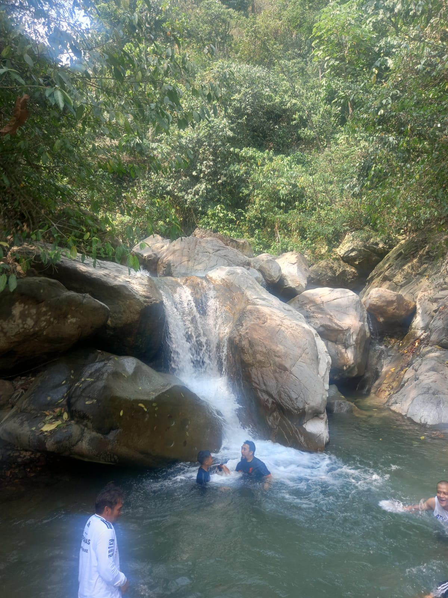
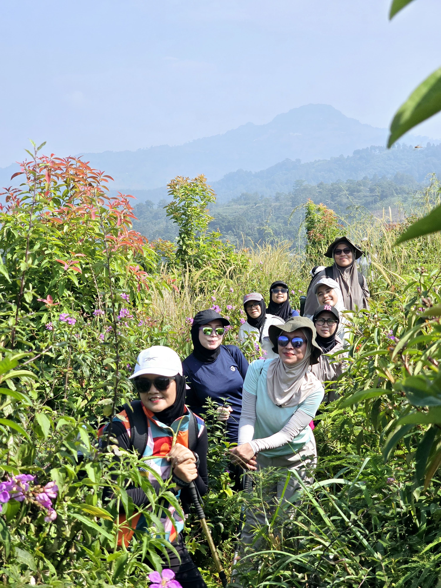

Pemandu lokal resmi spesialis susur sungai jernih, curug alami, terasering sawah, dan lorong goa karst purba. Jalur aman terawat, santai, dan bebas tersesat.
840+
Follower Instagram Aktif
160+
Postingan & Video Reels
100%
Pemandu Lokal Sentul
All Ages
Family & Private Group
Pemilik Layanan • Explore Tracking Sentul • Outdoor Adventure
Pemandu warga lokal Sentul yang berpengalaman memandu ratusan rombongan keluarga, komunitas pecinta alam, komunitas lari trail, dan rombongan kantor. Ramah, menguasai seluruh jalur tikus aman, sumber air sejuk, dan selalu siap mendampingi dari awal titik kumpul hingga kembali dengan selamat.
Kumpulan dokumentasi foto riil peserta trip yang dipandu langsung oleh Kang Rudi di berbagai destinasi Sentul, Bogor.

Rombongan Jalur Sawah Sentul

Panorama Bukit Merah Putih

Kolam Segar Air Terjun Sentul

Mandi Guyuran Air Terjun

Labirin Batu Goa Garunggang

Susur Sungai Bersama Klien

Jalur Aliran Sungai Asri

Rendam Kaki di Air Jernih

Berenang di Lubuk Alami

Petualangan Jalur Hijau Sentul
Lihat 160+ Dokumentasi Video Reels di Instagram
Keseruan rombongan, jembatan bambu, dan suasana air terjun ter-update di @exploretrackingsentul
Tiga karakter rute favorit yang siap dipandu Kang Rudi sesuai kenyamanan rombongan Anda.
Melewati terasering sawah hijau asri, perbukitan landai, dan sungai dangkal berair sejuk. Ramah anak-anak, lansia, dan pemula.
Fasilitas Termasuk:
Menyusuri bebatuan sungai alami berhawa dingin menuju Curug Barong dan kolam Leuwi Hejo dengan spot renang alami yang menyegarkan.
Fasilitas Termasuk:
Formasi batu kapur karst purba eksotis peninggalan alam ribuan tahun, dipadu jalur bukit pinus berkabut dan lorong batu alami.
Fasilitas Termasuk:
Menguasai seluk-beluk jalur tikus aman, mata air bersih, kondisi debit sungai, dan sangat ramah terhadap rombongan.
Briefing awal sebelum jalan, peminjaman tongkat trekking, P3K standar, dan pantauan cuaca lapangan berkala.
Kang Rudi siap mengabadikan foto dan video terbaik di spot air terjun dan perbukitan tanpa biaya fotografer ekstra.
Titik kumpul di basecamp resmi Sentul dengan parkir aman, toilet bersih, mushola, dan warung istirahat.
Sangat aman. Rute Leuwi Asih memiliki jalur landai dengan pematang sawah dan jalan setapak terawat. Ritme jalan disesuaikan sepenuhnya dengan kemampuan peserta.
Titik kumpul berada di Basecamp Sentul (bisa diakses mobil dan motor pribadi). Waktu mulai terbaik antara jam 06.30 - 08.00 WIB saat udara masih segar dan belum terik.
Langsung hubungi WhatsApp resmi Ruddy di 0858-8267-6988 atau kirim pesan melalui Instagram @exploretrackingsentul.